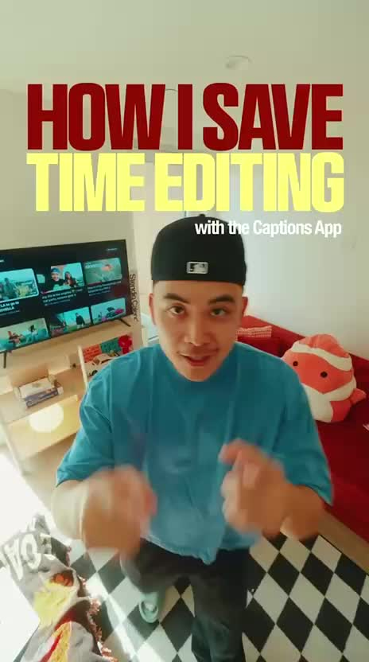
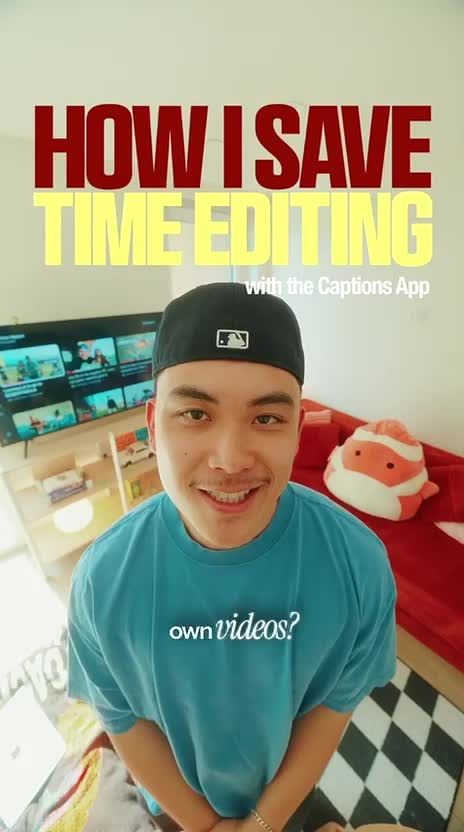
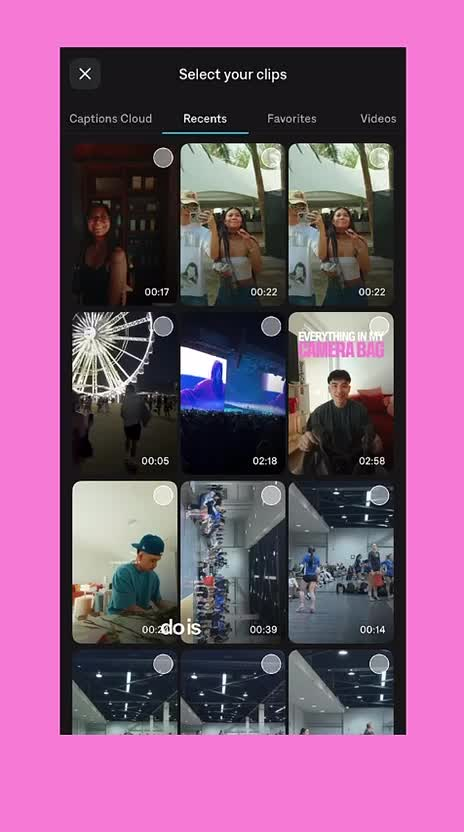
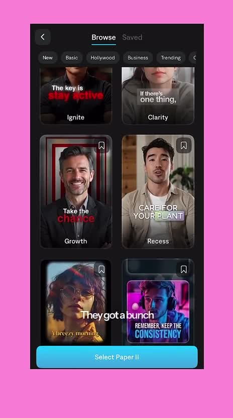
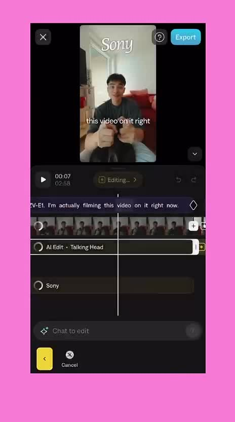
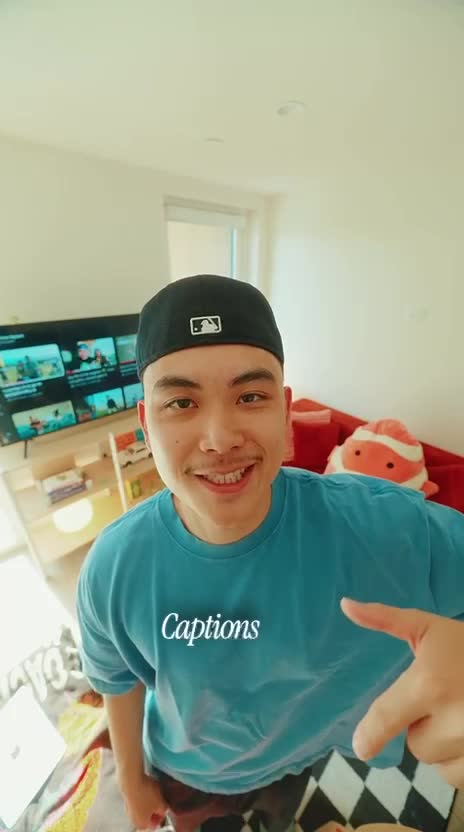
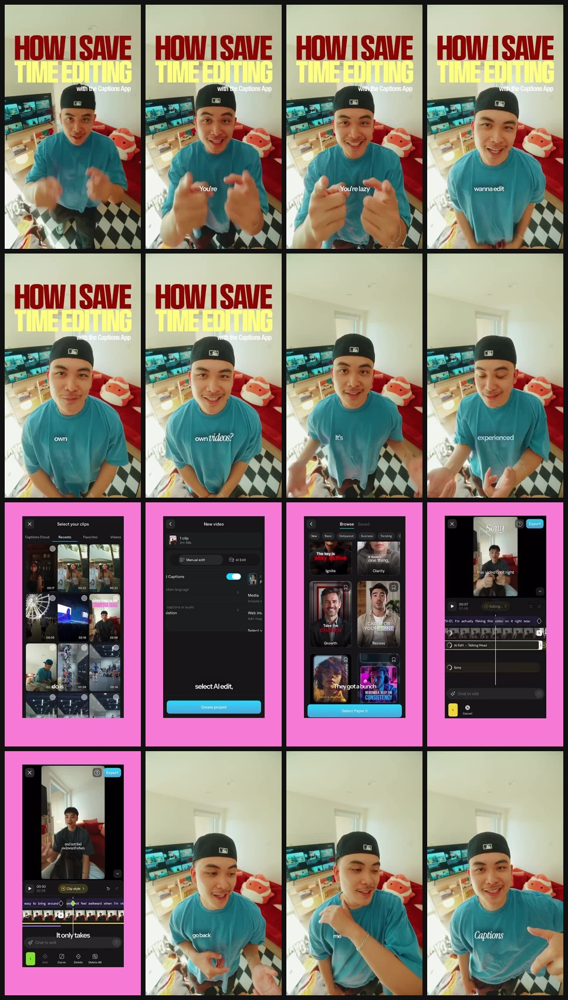
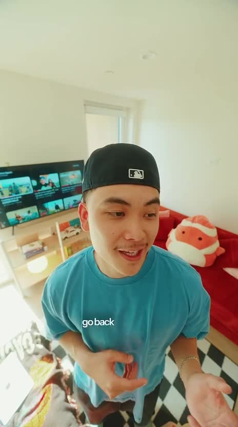

Hypothesis
If creators feel called out for avoiding edits and then see AI Edit plus templates, they may believe the app removes enough labor to try it.
The creative makes editing avoidance feel normal, then resolves it with visible AI-edit workflow proof inside the app.
If creators feel called out for avoiding edits and then see AI Edit plus templates, they may believe the app removes enough labor to try it.
Short-form creators and social teams who have raw footage but resist repetitive manual editing.
Cold prospecting with app-trial or install intent.
Click-through, app install, trial start, signup, or project creation.
Problem-aware to solution-aware.
medium

self-accusation hook
The viewer is put inside a familiar guilt loop: wanting output without wanting to do the editing labor.

pain narrowing
The problem is narrowed from general editing fatigue to the insecurity that editing requires skill or effort the viewer does not want to spend.

workflow proof by interface
The shortcut becomes concrete because the app flow starts from an ordinary raw clip rather than an abstract feature list.

style abundance proof
The app is positioned as taste and format selection, not only caption transcription.

editable-output proof
The viewer sees the promise turn into an editable artifact, which makes the AI shortcut feel controllable instead of magical.

branded implicit CTA
The viewer gets a simple brand memory cue, but the next action is less explicit than the product demonstration.
The creative makes editing avoidance feel normal, then resolves it with visible AI-edit workflow proof inside the app.
The viewer moves from 'editing my videos is annoying and skill-heavy' to 'I can start with raw clips and let the app do most of it.'
For Submagic, translate the tactic into a raw-clip-to-polished-output proof showing AI Captions, Auto Edit, Magic Clips, B-roll, and Brand Kit controls.
The ending is weaker than the middle because the CTA is mostly a brand cue rather than an explicit next step or finished-output reveal.
Creator appears in a vertical bedroom/studio shot under a large 'HOW I SAVE TIME EDITING' headline with 'with the Captions App' beside it; captions build toward 'You're lazy.'
The viewer is put inside a familiar guilt loop: wanting output without wanting to do the editing labor.
For Submagic, translate the tactic into a raw-clip-to-polished-output proof showing AI Captions, Auto Edit, Magic...
5 Evidence sources
The same creator-facing shot continues while the visible caption asks about editing one's own videos and later shows the word 'experienced.'
The problem is narrowed from general editing fatigue to the insecurity that editing requires skill or effort the viewer does not want to spend.
For Submagic, translate the tactic into a raw-clip-to-polished-output proof showing AI Captions, Auto Edit, Magic...
4 Evidence sources
The browse screen shows style/template cards with categories such as New, Basic, Hollywood, Business, and Trending, plus a 'Select Paper II' button.
The app is positioned as taste and format selection, not only caption transcription.
For Submagic, translate the tactic into a raw-clip-to-polished-output proof showing AI Captions, Auto Edit, Magic...
3 Evidence sources
The creator points downward while 'Captions' appears large across his shirt area as a branded end cue.
The viewer gets a simple brand memory cue, but the next action is less explicit than the product demonstration.
For Submagic, translate the tactic into a raw-clip-to-polished-output proof showing AI Captions, Auto Edit, Magic...
2 Evidence sources

Turn editing avoidance into a quick app workflow proof, then leave the brand cue as the action bridge.
Make AI editing feel easy, creator-native, and less intimidating than manual timeline work.
Creator appears in a vertical bedroom/studio shot under a large 'HOW I SAVE TIME EDITING' headline with 'with the Captions App' beside it; captions build toward 'You're lazy.'
The viewer is put inside a familiar guilt loop: wanting output without wanting to do the editing labor.
self-accusation hook
For Submagic, translate the tactic into a raw-clip-to-polished-output proof showing AI Captions, Auto Edit, Magic Clips, B-roll, and Brand Kit controls.
The same creator-facing shot continues while the visible caption asks about editing one's own videos and later shows the word 'experienced.'
The problem is narrowed from general editing fatigue to the insecurity that editing requires skill or effort the viewer does not want to spend.
pain narrowing
For Submagic, translate the tactic into a raw-clip-to-polished-output proof showing AI Captions, Auto Edit, Magic Clips, B-roll, and Brand Kit controls.
The ad cuts to a phone UI on a bright pink background: first a clip picker, then a new-video screen with Manual edit, AI Edit, Captions, and Create project controls.
The shortcut becomes concrete because the app flow starts from an ordinary raw clip rather than an abstract feature list.
workflow proof by interface
For Submagic, translate the tactic into a raw-clip-to-polished-output proof showing AI Captions, Auto Edit, Magic Clips, B-roll, and Brand Kit controls.
The browse screen shows style/template cards with categories such as New, Basic, Hollywood, Business, and Trending, plus a 'Select Paper II' button.
The app is positioned as taste and format selection, not only caption transcription.
style abundance proof
For Submagic, translate the tactic into a raw-clip-to-polished-output proof showing AI Captions, Auto Edit, Magic Clips, B-roll, and Brand Kit controls.
The editor view shows a preview, timeline thumbnails, Export, a Clip style control, an AI Edit - Talking Head layer, and editing actions such as Add, Curve, Delete, and Delete All.
The viewer sees the promise turn into an editable artifact, which makes the AI shortcut feel controllable instead of magical.
editable-output proof
For Submagic, translate the tactic into a raw-clip-to-polished-output proof showing AI Captions, Auto Edit, Magic Clips, B-roll, and Brand Kit controls.

The ad returns from the phone UI to the creator in the room, with short center captions such as 'go back' and 'me.'
The human creator presence reappears, but the proof density drops because the screen no longer shows a product state.
creator reassurance with proof fade
For Submagic, translate the tactic into a raw-clip-to-polished-output proof showing AI Captions, Auto Edit, Magic Clips, B-roll, and Brand Kit controls.
The creator points downward while 'Captions' appears large across his shirt area as a branded end cue.
The viewer gets a simple brand memory cue, but the next action is less explicit than the product demonstration.
branded implicit CTA
For Submagic, translate the tactic into a raw-clip-to-polished-output proof showing AI Captions, Auto Edit, Magic Clips, B-roll, and Brand Kit controls.
| # | Claim | Proof type | Weakness | Evidence |
|---|---|---|---|---|
| 1 | This app saves editing time. | headline and creator hook | The first seconds name the benefit but do not yet show the finished result. |
2 evidence IDs
|
| 2 | The workflow can start from raw clips. | clip picker and selected talking-head clip | The selected clip context is visible, but the ad does not quantify the time saved. |
2 evidence IDs
|
| 3 | AI can replace manual edit setup. | AI Edit option and captions toggle | The UI implies automation, but the exact AI choices are not fully explained. |
2 evidence IDs
|
| 4 | The output can match a chosen style. | template browse screen and editor layers | The template options are visible, but the final exported comparison is not clearly shown. |
6 evidence IDs
|
Creators often want the status of posting consistently but feel embarrassed by how much editing labor they avoid.
A skeptical creator may accept that the app has AI-edit controls but still wonder whether the final output is actually better than a simple captioned clip.
A first-three-seconds before-after preview could make the time-saving claim feel more concrete. A stronger final CTA could convert the product proof into a clearer next action. Removing the product UI middle would leave only a creator claim and significantly weaken believability.
The creator wants output volume but resents repetitive editing labor. The creator wants the result to look intentional, not like a raw upload. The creator distrusts vague AI promises unless the actual app path is visible. The creator needs to feel in control after AI automation, which the timeline and editing controls partially solve.
| Time | Viewer state | Trigger | Evidence |
|---|---|---|---|
| 0.0-3.0 | recognition and defensiveness | A bold time-saving headline plus a lazy-callout caption makes editing avoidance personal. |
2 evidence IDs
|
| 3.0-6.9 | problem acceptance | The caption sequence frames the viewer as someone who does not want to edit their own videos. |
2 evidence IDs
|
| 9.2-13.8 | solution inspection | The product screen shows raw clip selection, AI Edit, captions, and template browsing. |
3 evidence IDs
|
| 16.1-18.4 | control reassurance | The editor timeline and layers show that the automated result can still be adjusted. |
2 evidence IDs
|
| 25.3 | brand recall | The creator points down as the Captions brand appears as the final memory cue. |
1 evidence IDs
|
| Dimension | Score | Weakness / next improvement | Evidence |
|---|---|---|---|
| Cta Clarity medium confidence |
1/3 | The brand cue is visible, but the viewer is not shown a precise next action. |
2 evidence IDs
|
| Belief Shift medium confidence |
2/3 | The shift from manual editing to AI-assisted editing is visible, but time saved is not quantified. |
3 evidence IDs
|
| Pain Clarity medium confidence |
2/3 | The editing-avoidance pain is clear, but some caption text is only partially captured by OCR. |
3 evidence IDs
|
| Hook Strength high confidence |
3/3 | The hook is bold and benefit-led; the main improvement is showing the finished output sooner. |
3 evidence IDs
|
| Product Proof high confidence |
3/3 | The UI proof is strong; add a clearer exported before-after moment for extra conviction. |
5 evidence IDs
|
| Submagic Transferability high confidence |
3/3 | The mechanism maps cleanly to Submagic workflows if surface execution and competitor UI are not copied. |
4 evidence IDs
|
Native creator framing, direct-to-camera energy, and fast app-screen proof fit TikTok creative conventions.
The hook and product demo fit Reels, but the large top headline and small UI text need safe-zone review.
The benefit is clear, though YouTube Shorts may need an earlier before-after payoff to hold broad viewers.
The workflow proof is useful for prospecting, but the CTA and offer are softer than typical direct-response Meta ads.
The casual lazy-callout style is less aligned with business buyers unless reframed around agency throughput.